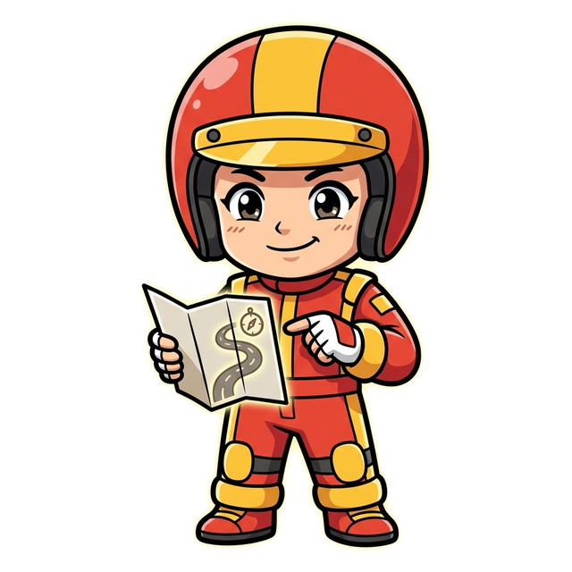
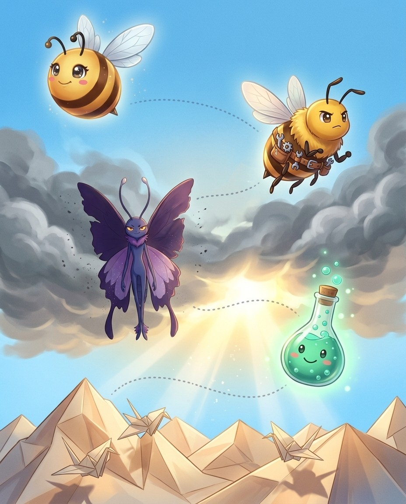
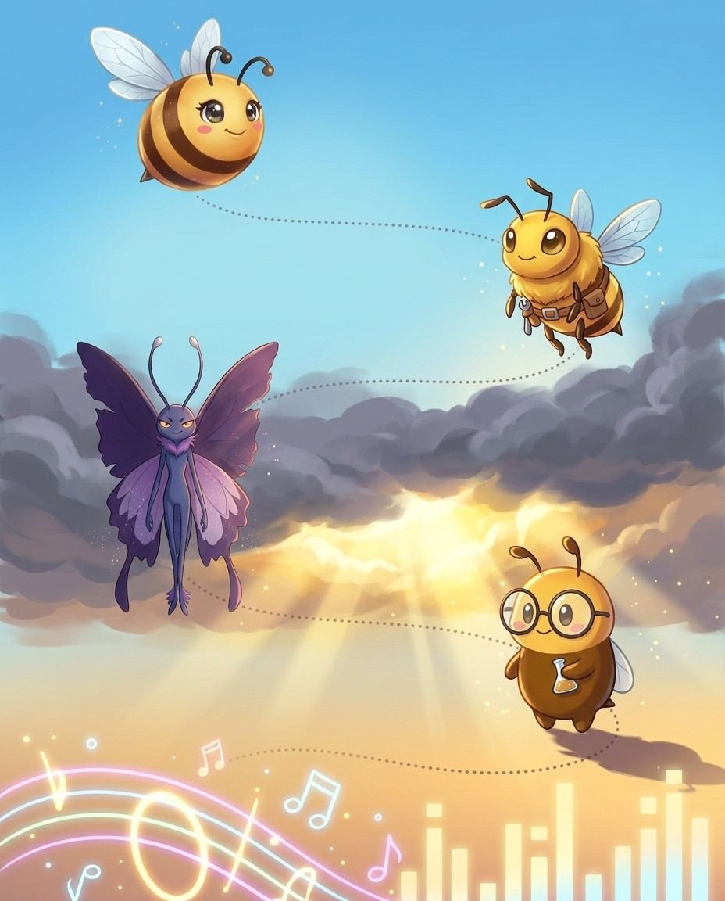
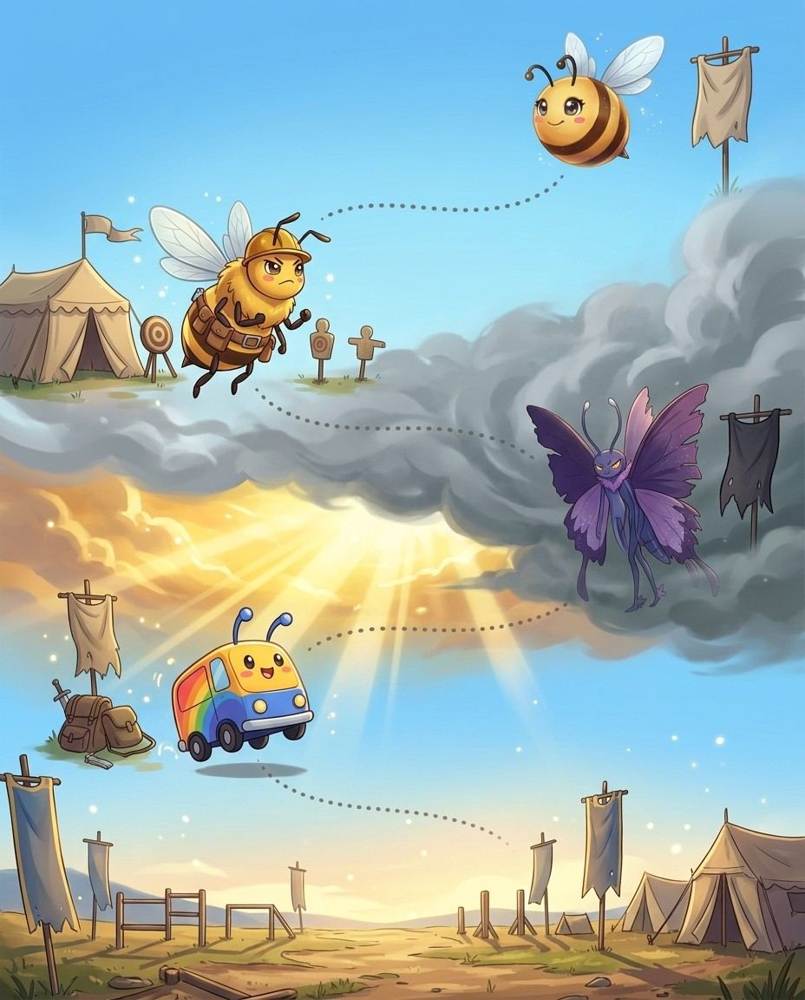

Drone here. Eleven Latin root families, drilled — that's the route. The crew and I will keep it moving; you keep the pencil moving.
1
Read the story
Each chapter opens as a storyboard. Vex sets the trap; the crew talks you out of it.
2
Steal the pro move
The dark box is how a champion thinks on stage. It works on brand-new words too.
3
Spell out loud, then write
Say it, spell it aloud, write it. The order matters — it is how the stage will ask for it.
4
Pass the checkpoint
A short quiz on the chapter you just read. Circle your answers; the back of the book keeps the truth.
5
Play the game, then revise
Every chapter ends with a fun game, answer key at the back. Revise all words at the end and circle the ones you can spell and define.
Bizzing Bee · Root Camp: Latin1
Root Camp: LatinThe cast
Bizzy — and this book's guide, Drone
The crew of Vol. 6
Every book travels with a crew. These nine hand you puzzles, host the checkpoints and occasionally get a line right before you do.
Bizzy — The little bee who spells the world back together, one petal at a time. · Drone — Steady and sure, Drone Dan keeps the hive humming.
Crash
OVR 59
Speller of the Speedway
Walks away from every wipe-out, grinning.
Bubbly Beaker
OVR 50
Rookie of the Lab
Bubbling with big ideas and bigger words.
Turbo
OVR 57
Speller of the Speedway
Built for speed, tuned for wins.
Neon King
OVR 79
Grandmaster of the Arcade
Rules the arcade in electric light.
Volt
OVR 67
Champion of the Lab
A jolt of pure spelling energy.
Cabinet Ghost
OVR 66
Speller of the Arcade
Haunts the maze, chasing the next word.
Rainbow Cart
OVR 81
Champion of the Arcade
Zooms across the finish in every colour.

Rally
OVR 57
Rookie of the Speedway
Reads the road and never misses a turn.
And the other one
Vex the word-moth sneaks through every chapter, planting the exact mistakes real spellers make. Spot the trap before you step in it.
Bizzing Bee · Root Camp: Latin2
WELCOME TO
The Engine Room
Roots are machine parts. In the Engine Room, Drone shows you how they fit.
Bizzing Bee · Root Camp: Latin3
1Latin Root Families · the Engine Roomaud (hear)
BizzyLatin audire = to hear
UH-OH!
VexTRAP: audacious is from audere = to dare!
GOT IT!
Crashaudible = A-U-D-I-B-L-E (-ible)
Voltaudience = those who come to hear
♫ narratedturn the page — the whole trick, explained →
4
Chapter 1 · aud (hear)The idea · ★★☆
The big idea
Latin audire = to hear. Everything about hearing and listening uses this root — from the audience that listens to audacious daring (a false friend: same letters, different root!).
Latin audire = to hear. Audible = able to be heard. Audience = those who come to hear. Auditorium = a place for hearing. Audit = originally an oral examination (hearing accounts).
The Audacious Trap
⚠️ Audacious shares aud- BUT comes from audere = to dare (different Latin root!). Audible (hearing) ≠ audacious (daring). Both share A-U-D at the start.
Vex alert
AUDIBLE uses -IBLE not -ABLE: you need your EAR (AUD) to make it audIBLE — 'I' hear it!
Check yourself
Cover the page and spell audible · audience · auditorium out loud. Miss one? Read the idea again — it's faster than guessing twice.
Bizzing Bee · Root Camp: Latin5
Chapter 1 · aud (hear)Practice · ★★☆
Say it. Spell it out loud. Write it.
audible
/ AH-duh-buhl / · /ˈɑdəbəl/
a football play is changed orally after both teams have assumed their positions at the line of scrimmage
hook: AUDIBLE uses -IBLE not -ABLE: you need your EAR (AUD) to make it audIBLE — 'I' hear it!
he spoke in an ▁▁▁ whisper
audience
/ AH-dee-uhns / · /ˈɑdiəns/
a gathering of spectators or listeners at a (usually public) performance
hook: An AUDIence uses their ears — like an AUDIO system
The ▁▁▁ burst into applause when the young violinist finished her breathtaking performance.
auditorium
/ aw-duh-TAW-ree-uhm / · /ɔdəˈtɔriəm/
the area of a theater or concert hall where the audience sits
hook: An audiTORIUM is a place where audiences hear — keep AUDI at the front, like listening.
The entire student body packed into the ▁▁▁ to watch the final spelling bee championship.
audit
/ AW-diht / · /ˈɔdɪt/
an inspection of the accounting procedures and records by a trained accountant or CPA
hook: An AUDIT is when the accountant 'hears' the books — Latin 'he heard': A-U-D-I-T, just five letters, one T.
he made an ▁▁▁ of all the plants on his property
audition
/ ah-DIH-shuhn / · /ɑˈdɪʃən/
the ability to hear; the auditory faculty
hook: An audITION is your chance to be heard — hear the word 'ITION' as you perform.
his hearing was impaired
audiometry
Bizzing Bee · Root Camp: Latin6
Chapter 1 · aud (hear)Rapid round · ★★☆
More ammo — one line each.
inaudible/ih-NAW-duh-buhl/ impossible to hear; imperceptible by the ear
audiovisual/aw-dee-oh-VIH-zhoo-uhl/ materials using sight or sound to present information
auditor/AW-dih-ter/ someone who listens attentively
subaudition/sub-aw-DISH-un/ The mental act of understanding or supplying something that is implied but not directly stated in speech or writing.
Lock them in
Pick 4 words from above. Say each one as you write it — three times, no shortcuts. The third copy is the one your hand remembers.
Bizzing Bee · Root Camp: Latin7
Chapter 1 · aud (hear)Checkpoint · ★★☆
Turbo · Speller of the Speedway runs the checkpoint
Do you own the idea?
Six questions on the chapter you just read. Circle your answers, then check the back. Turbo's power is Mind Palace — borrow it.
1. What does audiovisual mean?
Asomeone who listens attentively
Bmaterials using sight or sound to present information
Cimpossible to hear; imperceptible by the ear
DThe mental act of understanding or supplying something that is implied but not directly stated in speech or writing.
2. What does inaudible mean?
Aimpossible to hear; imperceptible by the ear
Bthe ability to hear; the auditory faculty
Ca gathering of spectators or listeners at a (usually public) performance
DThe mental act of understanding or supplying something that is implied but not directly stated in speech or writing.
3. Which spelling is correct?
Aaudeince
Baudiance
Cauddience
Daudience
4. “AUDIOVISUAL combines hearing AND seeing — AUDIO + VISUAL, both senses in one long word ending in -UAL.” — which word is that about?
Aaudition
Bsubaudition
Caudiovisual
Dinaudible
Dictation round
Hand this page to anyone nearby. They read the words from the answer key (Ch. 1 dictation, at the back) — you write, no peeking.
1.
2.
Bizzing Bee · Root Camp: Latin8
Chapter 1 · aud (hear)Game · ★★☆
Bubbly Beaker's puzzle page
Crossword
1
2
3
4
5
6
7
8
9
10
Across
4. impossible to hear; imperceptible by the ear
5.
6. materials using sight or sound to present information
8. the ability to hear; the auditory faculty
9. the area of a theater or concert hall where the audience sits
10. a football play is changed orally after both teams have assumed their positions at…
Down
1. someone who listens attentively
2. an inspection of the accounting procedures and records by a trained accountant or…
3. The mental act of understanding or supplying something that is implied but not…
7. a gathering of spectators or listeners at a (usually public) performance
Bizzing Bee · Root Camp: Latin9

2Latin Root Families · the Paper Mountainsdict / dic (say / speak)
BizzyLatin dicere = to say
UH-OH!
Vexindict = silent c, said /in-DYTE/
GOT IT!
Bubbly Beakerbene (good) + dict vs male (bad) + dict
Cabinet Ghostver (truth) + dict → verdict
♫ narratedturn the page — the whole trick, explained →
Latin dicere = to say. One of the most productive roots in legal, political, and everyday English. Every time something is said officially, pronounced, or declared, dict- is likely present.
The pro move
MALEDICTION
Say it. mal-eh-DIK-shun
Spell it. M · A · L · E · D · I · C · T · I · O · N
Latin dicere = to say. Diction = the way one says words = enunciation. Dictate = say officially. Edict (e- = out + dict) = what is said officially = a decree.
Bene- and Male-diction
Benediction (bene + dict + -ion) = a good saying = a blessing. Malediction (male + dict + -ion) = a bad saying = a curse. These are structural opposites built from the same dict- root.
Vex alert
Drop the E before adding -ING: DEDICATING, not dedicateing.
Sound trap
indict sounds like indite — at the mic, always ask for the meaning.
Check yourself
Cover the page and spell diction · dictate · edict out loud. Miss one? Read the idea again — it's faster than guessing twice.
malediction/mal-eh-DIK-shun/ the act of calling down a curse that invokes evil (and usually serves as an insult)
contradict/kah-ntruh-DIHKT/ To contradict a statement means to assert or express the opposite of what has been said.
predict/prih-DIHKT/ make a prediction about; tell in advance
interdict/IH-nter-dihkt/ an ecclesiastical censure by the Roman Catholic Church withdrawing certain sacraments and Christian burial from a person or all persons in a particular district
valediction
jurisdiction/juu-ruh-SDIH-kshuhn/ (law) the right and power to interpret and apply the law
abdicate/A-bduh-kayt/ To formally give up or renounce a high office, throne, or position of power or responsibility.
dedicating/DEH-dih-kay-tihng/ give entirely to a specific person, activity, or cause
Lock them in
Pick 4 words from above. Say each one as you write it — three times, no shortcuts. The third copy is the one your hand remembers.
3Latin Root Families · the Wide Straitduc / duct (lead)
BizzyLatin ducere = to lead
UH-OH!
Vexduc before vowels, duct before consonants
GOT IT!
Turboe- (out) + duc → educate
Rainbow CartEach prefix changes the direction of leading
♫ narratedturn the page — the whole trick, explained →
16
Chapter 3 · duc / duct (lead)The idea · ★★☆
The big idea
Latin ducere = to lead. From education (leading out knowledge) to seduction (leading aside), this root describes every form of leading, guiding, and conducting.
The pro move
INDUCTION
Say it. ih-NDUH-kshuhn
Spell it. I · N · D · U · C · T · I · O · N
Say it again. ih-NDUH-kshuhn
Syllables. ih · ndah · kshah · n
Sounds → Letters. [in=IN] [DUK=DUC] [shun=TION]
The Root
Latin ducere = to lead. Induct = lead into a position. Educate (e- = out + duc) = lead knowledge outward from within. Introduce (intro- = within + duce) = lead into the presence of.
Duke & Duchess
Duke = dux = the leader. From ducere → dux → Old French duc → English duke. A duke is literally "a leader." Aqueduct (aqua = water + ductus) = a structure that leads water.
Vex alert
AquEDUCT not aquADUCT — the E is the bridge that carries water, just like the structure itself.
Check yourself
Cover the page and spell induction · educate · conduct out loud. Miss one? Read the idea again — it's faster than guessing twice.
Bizzing Bee · Root Camp: Latin17
Chapter 3 · duc / duct (lead)Practice · ★★☆
Say it. Spell it out loud. Write it.
induction
/ ih-NDUH-kshuhn / · /ɪˈndʌkʃən/
a formal entry into an organization or position or office
hook: INDUCTION has the word DUCT in it — like a duct leading you IN to a new role.
his initiation into the club
educate
/ EH-juh-kayt / · /ˈɛdʒəkeɪt/
give an education to
hook: EDUCATE has a DUCK in the middle — a teacher leads ducklings out to learn.
We must ▁▁▁ our youngsters better
conduct
/ KAH-nduhkt / · /ˈkɑndəkt/
manner of acting or controlling yourself
hook: CONDUCT — a CONDUCTor LEADS the orchestra. CON+DUCT, no extra letters hidden inside.
You cannot ▁▁▁ business like this
reduce
/ ruh-DOOS / · /rəˈdus/
cut down on; make a reduction in
hook: The DUKE led things BACK — reDUCE ends in DUCE, like a duke leading things down.
▁▁▁ your daily fat intake
introduce
/ ih-ntruh-DOOS / · /ɪntrəˈdus/
cause to come to know personally
hook: Introduce uses -duce like 'conduct' or 'deduce'—you LEAD someone IN.
permit me to acquaint you with my son
abduct
/ a-BDUHKT / · /æˈbdʌkt/
To take someone away by force or illegally, such as in a kidnapping; also, in anatomy, to move a limb away from the body's midline.
hook: ab- (away) + duct (lead): to lead someone away against their will
The villain's plot to ▁▁▁ the young princess was foiled by the brave knights who had been standing guard.
Bizzing Bee · Root Camp: Latin18
Chapter 3 · duc / duct (lead)Rapid round · ★★☆
More ammo — one line each.
deduct/dih-DUHKT/ make a subtraction
seduce
traduce/truh-DYOOS/ means to slander or defame
adduce/ah-DOOS/ advance evidence for
aqueduct/A-kwuh-duhkt/ a conduit that resembles a bridge but carries water over a valley
viaduct/VEYE-uh-duhkt/ bridge consisting of a series of arches supported by piers used to carry a road (or railroad) over a valley
conductor/kuh-NDUH-kter/ the person who leads a musical group
semiconductor/seh-mee-kuh-NDUH-kter/ a substance as germanium or silicon whose electrical conductivity is intermediate between that of a metal and an insulator; its conductivity increases with temperature and in the presence of impurities
ductile/DUH-ktuhl/ easily influenced
inductee/ih-nduh-KTEE/ a person inducted into an organization or social group
Lock them in
Pick 4 words from above. Say each one as you write it — three times, no shortcuts. The third copy is the one your hand remembers.
Bizzing Bee · Root Camp: Latin19
Chapter 3 · duc / duct (lead)Checkpoint · ★★☆
Volt · Champion of the Lab runs the checkpoint
Do you own the idea?
Six questions on the chapter you just read. Circle your answers, then check the back. Volt's power is Fast Forward — borrow it.
1. What does reduce mean?
Abridge consisting of a series of arches supported by piers used to carry a road (or railroad) over a valley
Bcut down on; make a reduction in
Ccause to come to know personally
DTo take someone away by force or illegally, such as in a kidnapping; also, in anatomy, to move a limb away from the body's midline.
2. What does ductile mean?
ATo take someone away by force or illegally, such as in a kidnapping; also, in anatomy, to move a limb away from the body's midline.
Beasily influenced
Cthe person who leads a musical group
Da formal entry into an organization or position or office
3. Which spelling is correct?
Asemmiconductor
Bsemiconductor
Csimiconductor
Dsemiconducter
4. “The DUKE led things BACK — reDUCE ends in DUCE, like a duke leading things down.” — which word is that about?
Aconduct
Btraduce
Cintroduce
Dreduce
Dictation round
Hand this page to anyone nearby. They read the words from the answer key (Ch. 3 dictation, at the back) — you write, no peeking.
1.
2.
Bizzing Bee · Root Camp: Latin20
Chapter 3 · duc / duct (lead)Game · ★★☆
Neon King's puzzle page
Scramble & rescue
Unscramble
ecdeur
oneirtcud
tcdconu
uctdaueq
tdueiecn
cinidntou
Rescue the vowels
c_nd_ct_r
v__d_ct
r_d_c_
d_ct_l_
_ntr_d_c_
c_nd_ct
Bizzing Bee · Root Camp: Latin21
4Latin Root Families · the Word Junkyardfer (carry / bear)
BizzyLatin ferre = to carry, to bear
UH-OH!
Vexprefer → preferring (double r when stress shifts)
GOT IT!
Neon Kingconus (cone) + -fer → conifer
Rallytrans (across) + fer → transfer
♫ narratedturn the page — the whole trick, explained →
22
Chapter 4 · fer (carry / bear)The idea · ★★☆
The big idea
Latin ferre = to carry, to bear. One of the most productive Latin roots — it appears in scientific (conifer, fertile), legal (transfer), and everyday (prefer, suffer) vocabulary.
The pro move
EFFERVESCE
Say it. —
Spell it. E · F · F · E · R · V · E · S · C · E
Say it again. —
Syllables. e · f · f · e · r · v · e · s · c · e
Sounds → Letters. [ef=EF] [fer=FER] [VES=VES]
The Root
Latin ferre = to carry, bear. Transfer (trans- = across) = carry across. Confer (con- = together) = carry/bring together = discuss. Defer (de- = away) = carry away = postpone or show respect.
You PREFER what you put beFORE — don't mix up the R and E: pre-FER, not per-fer.
Check yourself
Cover the page and spell transfer · confer · defer out loud. Miss one? Read the idea again — it's faster than guessing twice.
Bizzing Bee · Root Camp: Latin23
Chapter 4 · fer (carry / bear)Practice · ★★☆
Say it. Spell it out loud. Write it.
transfer
/ tra-NSFUR / · /træˈnsfʌr/
the act of moving something from one location to another
hook: To transFER is to FERRY something across — FER sounds like FERRY, carrying goods over water.
the best student was a ▁▁▁ from LSU
confer
/ kuh-NFUR / · /kəˈnfʌr/
have a conference in order to talk something over
hook: When you conFER, you bring ideas toFERther — FER is the engine that carries meaning.
We ▁▁▁ about a plan of action
defer
/ dih-FUR / · /dɪˈfʌr/
hold back to a later time
hook: To deFER is to carry a decision FURther away — hear the FUR sound and picture pushing it away.
let's postpone the exam
infer
/ ih-NFUR / · /ɪˈnfʌr/
reason by deduction; establish by deduction
hook: To inFER, you carry facts inward — FER means carry, like a ferry.
He guessed the right number of beans in the jar and won the prize
prefer
/ pruh-FUR / · /prəˈfʌr/
like better; value more highly
hook: You PREFER what you put beFORE — don't mix up the R and E: pre-FER, not per-fer.
Some people ▁▁▁ camping to staying in hotels
aquifer
/ A-kwuh-fer / · /ˈækwəfər/
underground bed or layer yielding ground water for wells and springs etc
hook: An aquiFER FERries water underground — the FER ending means 'to carry,' like a watery chauffeur.
Farmers in the region depend on a deep underground ▁▁▁ to water their crops during dry summers.
Bizzing Bee · Root Camp: Latin24
Chapter 4 · fer (carry / bear)Rapid round · ★★☆
More ammo — one line each.
conifer/KAH-nuh-fer/ any gymnospermous tree or shrub bearing cones
proliferate/proh-LIH-fer-ayt/ grow rapidly
odoriferous
suffer/SUH-fer/ undergo or be subjected to
offer/AW-fer/ the verbal act of offering
afferent/A-fer-uhnt/ a nerve that passes impulses from receptors toward or to the central nervous system
efferent/EH-fer-uhnt/ a nerve that conveys impulses toward or to muscles or glands
fertile/FUR-tuhl/ capable of reproducing
fertility/fer-TIH-luh-tee/ the ratio of live births in an area to the population of that area; expressed per 1000 population per year
fertilize/FUR-tuh-leyez/ provide with fertilizers or add nutrients to
Lock them in
Pick 4 words from above. Say each one as you write it — three times, no shortcuts. The third copy is the one your hand remembers.
Bizzing Bee · Root Camp: Latin25
Chapter 4 · fer (carry / bear)Checkpoint · ★★☆
Cabinet Ghost · Speller of the Arcade runs the checkpoint
Do you own the idea?
Six questions on the chapter you just read. Circle your answers, then check the back. Cabinet Ghost's power is Power Core — borrow it.
1. What does conifer mean?
Aany gymnospermous tree or shrub bearing cones
Bhave a conference in order to talk something over
Cundergo or be subjected to
Dunderground bed or layer yielding ground water for wells and springs etc
2. What does fertilize mean?
Alike better; value more highly
Bhave a conference in order to talk something over
Cunderground bed or layer yielding ground water for wells and springs etc
Dprovide with fertilizers or add nutrients to
3. Which spelling is correct?
Adefar
Bdifer
Cdefer
Ddeffer
4. “A conifer BEARS CONES — 'fer' means bear, so a coniFER bears cones like a pine tree.” — which word is that about?
Afertilize
Bafferent
Cconifer
Dprefer
5. Which word fills the gap? “The tall ▁▁▁ stood alone on the ridge, its dark green needles dusted with fresh snow.”
Aprefer
Bafferent
Csuffer
Dconifer
6. Which word belongs to this chapter’s family?
Aboudoir
Bmyocardial
Cfenestration
Dconifer
Dictation round
Hand this page to anyone nearby. They read the words from the answer key (Ch. 4 dictation, at the back) — you write, no peeking.
1.
2.
Bizzing Bee · Root Camp: Latin26
Chapter 4 · fer (carry / bear)Game · ★★☆
Volt's puzzle page
Crossword
1
2
3
4
5
6
7
8
9
10
Across
2. any gymnospermous tree or shrub bearing cones
6. undergo or be subjected to
7. grow rapidly
9. the act of moving something from one location to another
10. reason by deduction; establish by deduction
Down
1. like better; value more highly
3.
4. have a ▁▁▁ in order to talk something over
5. underground bed or layer yielding ground water for wells and springs etc
8. hold back to a later time
Bizzing Bee · Root Camp: Latin27

5Latin Root Families · the Vibescrib / script (write)
BizzyLatin scribere = to write
UH-OH!
VexTRAP: prescribe vs proscribe
GOT IT!
Voltscrib before vowels, script before consonants
Joy Stickmanus (hand) + script → manuscript
♫ narratedturn the page — the whole trick, explained →
28
Chapter 5 · scrib / script (write)The idea · ★★☆
The big idea
Latin scribere = to write. Every form of official writing — prescriptions, descriptions, scripts, manuscripts — uses this root. It appears with the full range of Latin prefixes.
The pro move
CIRCUMSCRIBE
Say it. sur-kuh-MSKREYEB
Spell it. C · I · R · C · U · M · S · C · R · I · B · E
♫ narratedturn the page — the whole trick, explained →
34
Chapter 6 · port (carry)The idea · ★☆☆
The big idea
Latin portare = to carry. One of the clearest-meaning roots in English — every port- word involves carrying, moving, or transporting something, physically or metaphorically.
Latin portare = to carry. Import (in- = in + port) = carry in from another country. Export (ex- = out) = carry out to another country. Transport (trans- = across) = carry across.
Portfolio & Portmanteau
Portfolio (port- + foglio = leaf/sheet) = something that carries papers/documents. Portmanteau (port- + manteau = cloak) = a large suitcase that carries cloaks.
Vex alert
PORTABLE contains PORT — you can carry it to any PORT in the world; remember -able not -ible.
Check yourself
Cover the page and spell import · export · transport out loud. Miss one? Read the idea again — it's faster than guessing twice.
Bizzing Bee · Root Camp: Latin35
Chapter 6 · port (carry)Practice · ★☆☆
Say it. Spell it out loud. Write it.
import
/ ih-MPAWRT / · /ɪˈmpɔrt/
commodities (goods or services) bought from a foreign country
hook: IMPORT — goods come IN through a PORT; IM replaces IN before 'p,' like goods docking at the harbor.
the lead role was played by an ▁▁▁ from Sweden
export
/ EH-kspawrt / · /ˈɛkspɔrt/
commodities (goods or services) sold to a foreign country
hook: To EXport is to EXIT through the PORT with your goods.
we ▁▁▁ less than we import and have a negative trade balance
transport
/ tra-NSPAWRT / · /træˈnspɔrt/
something that serves as a means of transportation
hook: A PORT is where ships carry cargo — transPORT carries things across.
listening to sweet music in a perfect rapture
report
/ ree-PAWRT / · /riˈpɔrt/
a written document describing the findings of some individual or group
hook: A reporter CARRIES news BACK to you — re+PORT like a porter carrying luggage back.
this accords with the recent study by Hill and Dale
support
/ suh-PAWRT / · /səˈpɔrt/
the activity of providing for or maintaining by supplying with money or necessities
hook: A SUPPORTer carries you from under — like a PORT-er who lifts from below (SUB).
his ▁▁▁ kept the family together
portfolio
/ paw-RTFOH-lee-oh / · /pɔrtˈfoʊliˌoʊ/
a large, flat, thin case for carrying loose papers or drawings or maps; usually leather
hook: A portFOLIO carries your FOLIOs — sheets of paper you PORTA (carry) around to show your work.
he remembered her because she was carrying a large ▁▁▁
Bizzing Bee · Root Camp: Latin36
Chapter 6 · port (carry)Rapid round · ★☆☆
More ammo — one line each.
portmanteau/PAW-rtmah-ntoh/ a new word formed by joining two others and combining their meanings
deportment/duh-PAW-rtmuhnt/ the manner in which a person behaves toward others; conduct and bearing
comport/kuh-MPAWRT/ behave well or properly
rapport/r-a-p-AW-r/ is relation or connection
disport/dis-PORT/ occupy in an agreeable, entertaining or pleasant fashion
portable/PAW-rtuh-buhl/ a small light typewriter; usually with a case in which it can be carried
porter/PAW-rter/ a person employed to carry luggage and supplies
importation/ih-mpaw-RTAY-shuhn/ the commercial activity of buying and bringing in goods from a foreign country
Lock them in
Pick 4 words from above. Say each one as you write it — three times, no shortcuts. The third copy is the one your hand remembers.
Bizzing Bee · Root Camp: Latin37
Chapter 6 · port (carry)Checkpoint · ★☆☆
Rally · Rookie of the Speedway runs the checkpoint
Do you own the idea?
Six questions on the chapter you just read. Circle your answers, then check the back. Rally's power is Deep Knowing — borrow it.
1. What does deportment mean?
Aa large, flat, thin case for carrying loose papers or drawings or maps; usually leather
Bsomething that serves as a means of transportation
Cthe manner in which a person behaves toward others; conduct and bearing
Dthe activity of providing for or maintaining by supplying with money or necessities
2. What does portable mean?
Athe activity of providing for or maintaining by supplying with money or necessities
Bcommodities (goods or services) sold to a foreign country
Ca large, flat, thin case for carrying loose papers or drawings or maps; usually leather
Da small light typewriter; usually with a case in which it can be carried
3. “dePORTment is about how you PORT or carry yourself in public” — which word is that about?
Aportmanteau
Bcomport
Crapport
Ddeportment
4. Which word fills the gap? “The finishing school emphasized ▁▁▁, teaching students to walk with confidence and speak with courtesy.”
Aporter
Bdeportment
Crapport
Dexport
Dictation round
Hand this page to anyone nearby. They read the words from the answer key (Ch. 6 dictation, at the back) — you write, no peeking.
1.
2.
Bizzing Bee · Root Camp: Latin38
Chapter 6 · port (carry)Game · ★☆☆
Rainbow Cart's puzzle page
Scramble & rescue
Unscramble
tprropa
rplebtao
rstuppo
oterpr
ntpmeeotrd
irspodt
Rescue the vowels
r_pp_rt
_mp_rt_t__n
tr_nsp_rt
d_p_rtm_nt
c_mp_rt
r_p_rt
Bizzing Bee · Root Camp: Latin39

7Latin Root Families · the Proving Groundmiss / mit (send)
BizzyLatin mittere = to send
UH-OH!
Vexverb = -mit; noun = -mission; double t when stressed
GOT IT!
Rainbow Cartper (through) + mission → permission
Bubbly Beakere- (out) + mit → emit
♫ narratedturn the page — the whole trick, explained →
40
Chapter 7 · miss / mit (send)The idea · ★★☆
The big idea
Latin mittere = to send. It appears as -miss- in nouns and -mit in verbs — the same root, two faces. From mission to remit, dismiss to submit, sending is this root's business.
The pro move
INTERMISSION
Say it. ih-nter-MIH-shuhn
Spell it. I · N · T · E · R · M · I · S · S · I · O · N
mittere → missio (noun). Permission (per- + mission) = sending through = official allowance. Intermission = a sending between acts = a break. Missionary = one sent on a mission.
Vex alert
OMIT has just ONE 'm' — don't add an extra letter to a word that means to leave things out!
Sound trap
missile sounds like missal — at the mic, always ask for the meaning.
Check yourself
Cover the page and spell transmit · omit · emit out loud. Miss one? Read the idea again — it's faster than guessing twice.
Bizzing Bee · Root Camp: Latin41
Chapter 7 · miss / mit (send)Practice · ★★☆
Say it. Spell it out loud. Write it.
transmit
/ tra-NZMIHT / · /træˈnzmɪt/
transfer to another
hook: transMIT sends just one T when you MITt the signal — only double T when adding suffixes.
communicate a disease
omit
/ oh-MIHT / · /oʊˈmɪt/
prevent from being included or considered or accepted
hook: OMIT has just ONE 'm' — don't add an extra letter to a word that means to leave things out!
The bad results were excluded from the report
emit
/ ih-MIHT / · /ɪˈmɪt/
expel (gases or odors)
hook: To EMIT is to let it OUT — one m, like one exit door.
The ozone layer blocks some harmful rays which the sun ▁▁▁
remit
/ ree-MIHT / · /riˈmɪt/
the topic that a person, committee, or piece of research is expected to deal with or has authority to deal with
hook: reMIT has one M — you send (MIT) something back RE-once, not twice.
they set up a group with a ▁▁▁ to suggest ways for strengthening family life
submit
/ suh-BMIHT / · /səˈbmɪt/
refer for judgment or consideration
hook: subMIT: you SEND IT under the judge's authority.
The lawyers ▁▁▁ the material to the court
permission
/ per-MIH-shuhn / · /pərˈmɪʃən/
approval to do something
hook: perMISSion: you MISS your chance if you don't get it — double S like 'please, please'
Before leaving campus for the field trip, every student had to have a signed ▁▁▁ slip from a parent.
Bizzing Bee · Root Camp: Latin42
Chapter 7 · miss / mit (send)Rapid round · ★★☆
More ammo — one line each.
intermission/ih-nter-MIH-shuhn/ the act of suspending activity temporarily
missionary/MIH-shuh-neh-ree/ someone who attempts to convert others to a particular doctrine or program
emission/ih-MIH-shuhn/ the act of emitting; causing to flow forth
commission/kuh-MIH-shuhn/ a special group delegated to consider some matter; - Milton Berle
missile/MIH-suhl/ a rocket carrying a warhead of conventional or nuclear explosives; may be ballistic or directed by remote control
message/MEH-suhj/ a communication (usually brief) that is written or spoken or signaled
dismiss/dih-SMIHS/ bar from attention or consideration
demise/dih-MEYEZ/ the time when something ends
commit/kuh-MIHT/ perform an act, usually with a negative connotation
admittance/uh-DMIH-tuhns/ the right to enter
Lock them in
Pick 4 words from above. Say each one as you write it — three times, no shortcuts. The third copy is the one your hand remembers.
Bizzing Bee · Root Camp: Latin43
Chapter 7 · miss / mit (send)Checkpoint · ★★☆
Joy Stick · Speller of the Arcade runs the checkpoint
Do you own the idea?
Six questions on the chapter you just read. Circle your answers, then check the back. Joy Stick's power is Endless Engine — borrow it.
1. What does missionary mean?
Aapproval to do something
Bsomeone who attempts to convert others to a particular doctrine or program
Cthe act of emitting; causing to flow forth
Dthe time when something ends
2. What does permission mean?
Athe act of suspending activity temporarily
Bapproval to do something
Cperform an act, usually with a negative connotation
Da rocket carrying a warhead of conventional or nuclear explosives; may be ballistic or directed by remote control
3. Which spelling is correct?
Apermission
Bpirmission
Cpermision
Dpermistion
4. “A MISSIONARY carries a MISSION on their back—spell it just like mission, then add -ary.” — which word is that about?
Amissionary
Badmittance
Cmissile
Dremit
5. Which word fills the gap? “The ▁▁▁ learned the local language so she could better communicate with the community.”
Amissionary
Bemission
Ccommission
Domit
6. Which word belongs to this chapter’s family?
Averacious
Bdialogue
Cmissionary
Dsyzygy
Dictation round
Hand this page to anyone nearby. They read the words from the answer key (Ch. 7 dictation, at the back) — you write, no peeking.
1.
2.
Bizzing Bee · Root Camp: Latin44
Chapter 7 · miss / mit (send)Game · ★★☆
Rally's puzzle page
Crossword
1
2
3
4
5
6
7
8
9
10
Across
1. prevent from being included or considered or accepted
6. the act of suspending activity temporarily
7. expel (gases or odors)
8. someone who attempts to convert others to a particular doctrine or program
10. the act of emitting; causing to flow forth
Down
2. transfer to another
3. approval to do something
4. refer for judgment or consideration
5. a special group delegated to consider some matter; - Milton Berle
9. the topic that a person
Bizzing Bee · Root Camp: Latin45
8Latin Root Families · the Grey Seavert / vers (turn)
BizzyLatin vertere = to turn
UH-OH!
Vexverb -vert; noun -version; anniversary double n
GOT IT!
Rallyintro (inward) + vert → introvert
Turboin (into) + vert → invert
♫ narratedturn the page — the whole trick, explained →
46
Chapter 8 · vert / vers (turn)The idea · ★★☆
The big idea
Latin vertere = to turn. This root appears in personality words, scientific terms, and everyday vocabulary. It is one of the most versatile (from versatilis = turning easily!) roots in Latin.
The pro move
SUBVERT
Say it. suh-BVURT
Spell it. S · U · B · V · E · R · T
Say it again. suh-BVURT
Syllables. sah · bver · t
Sounds → Letters. [sub=SUB] [VURT=VERT]
The Root
Latin vertere = to turn. Invert (in- = into) = turn inside out. Divert (di- = away) = turn away. Revert (re- = back) = turn back to a previous state.
vers- Form (Noun/Adjective)
The verb form uses -vert; the noun and adjective use -vers-. Subvert → subversion → subversive. Invert → inversion → inverse. Convert → conversion → conversive (rare).
Vex alert
The UNIVERSE is one big VERSE — UNI-VERSE, spelled with a V not a C.
Check yourself
Cover the page and spell invert · divert · revert out loud. Miss one? Read the idea again — it's faster than guessing twice.
Bizzing Bee · Root Camp: Latin47
Chapter 8 · vert / vers (turn)Practice · ★★☆
Say it. Spell it out loud. Write it.
invert
/ ih-NVURT / · /ˌɪnˈvərt/
make an inversion (in a musical composition)
hook: To INVERT is to turn IN the VERT(ical) — flip it inside out, like an umbrella in wind.
here the theme is ▁▁▁
divert
/ deye-VURT / · /daɪˈvʌrt/
To divert something means to cause it to change direction or turn away from its original course.
hook: To diVERT is to turn a VERTical path sideways — the V turns the road.
The play amused the ladies
revert
/ rih-VURT / · /rɪˈvʌrt/
go back to a previous state
hook: To reVERT is to turn (VERT) back again—a vertebra pivots just like this word.
We ▁▁▁ to the old rules
convert
/ KAH-nvert / · /ˈkɑnvərt/
a person who has been converted to another religious or political belief
hook: To CONVERT is to TURN — CON+VERT, where VERT means turn in Latin.
We ▁▁▁ from 220 to 110 Volt
subvert
/ suh-BVURT / · /səˈbvʌrt/
cause the downfall of; of rulers
hook: To subVERT is to turn something UNDER — VERT means turn, remember to spell it with E.
The Czar was overthrown
versatile
/ VUR-suh-tuhl / · /ˈvʌrsətəl/
having great diversity or variety; able to adapt to many different functions or activities
hook: verSATile people can SAT(isfy) many roles.
The ▁▁▁ athlete excelled at soccer, swimming, and gymnastics, making her the most valuable member of the school's sports program.
Bizzing Bee · Root Camp: Latin48
Chapter 8 · vert / vers (turn)Rapid round · ★★☆
More ammo — one line each.
anniversary/a-nuh-VUR-ser-ee/ the date on which an event occurred in some previous year (or the celebration of it)
universe/YOO-nuh-vurs/ everything that exists anywhere
controversy/KAH-ntruh-vur-see/ a contentious speech act; a dispute where there is strong disagreement
introvert/IH-ntroh-vurt/ (psychology) a person who tends to shrink from social contacts and to become preoccupied with their own thoughts
extrovert/EH-kstruh-vurt/ (psychology) a person concerned more with practical realities than with inner thoughts and feelings
ambivert
inadvertent/ih-nuh-DVUR-tuhnt/ happening by chance or unexpectedly or unintentionally
adverse/a-DVURS/ contrary to your interests or welfare
traverse/TRA-vers/ to travel or pass across, over, or through; also a horizontal beam or barrier extending across something
aversion/uh-VUR-zhuhn/ a feeling of intense dislike
Lock them in
Pick 4 words from above. Say each one as you write it — three times, no shortcuts. The third copy is the one your hand remembers.
Bizzing Bee · Root Camp: Latin49
Chapter 8 · vert / vers (turn)Checkpoint · ★★☆
Crash · Speller of the Speedway runs the checkpoint
Do you own the idea?
Six questions on the chapter you just read. Circle your answers, then check the back. Crash's power is Deep Knowing — borrow it.
1. What does ambivert mean?
Aa feeling of intense dislike
B
Chappening by chance or unexpectedly or unintentionally
Dthe date on which an event occurred in some previous year (or the celebration of it)
2. What does invert mean?
Amake an inversion (in a musical composition)
Ba person who has been converted to another religious or political belief
C(psychology) a person who tends to shrink from social contacts and to become preoccupied with their own thoughts
DTo divert something means to cause it to change direction or turn away from its original course.
3. “To INVERT is to turn IN the VERT(ical) — flip it inside out, like an umbrella in wind.” — which word is that about?
Ainvert
Binadvertent
Csubvert
Danniversary
4. Which word fills the gap? “here the theme is ▁▁▁”
Acontroversy
Badverse
Cconvert
Dinvert
5. Which word belongs to this chapter’s family?
Aeuphony
Bdemocracy
Cambivert
Dcredulous
Dictation round
Hand this page to anyone nearby. They read the words from the answer key (Ch. 8 dictation, at the back) — you write, no peeking.
9Latin Root Families · the Meadowspec / spect / spic (see / look)
BizzyLatin specere = to look
UH-OH!
Vexwatch the -spic- cluster: S-P-I-C
GOT IT!
Joy Stickcon + spic → conspicuous
Neon Kingpro (forward) + spect → prospect
♫ narratedturn the page — the whole trick, explained →
52
Chapter 9 · spec / spect / spic (see / look)The idea · ★★☆
The big idea
Latin specere = to look. This root appears in vision words, philosophy words, and character words. The -spic- form is rarer and harder to recognize — making it a championship bee favorite.
The pro move
CIRCUMSPECT
Say it. SUR-kuh-mspehkt
Spell it. C · I · R · C · U · M · S · P · E · C · T
something or someone seen (especially a notable or unusual sight)
hook: A SPECTACLE is something worth SPECTing (looking at) — spot the SPECT inside.
the tragic ▁▁▁ of cripples trying to escape
prospect
/ PRAH-spehkt / · /ˈprɑspɛkt/
the possibility of future success
hook: A PROSPECT is what you see when you look FORWARD—proSPECT, LOOK ahead.
his ▁▁▁ as a writer are excellent
retrospect
/ REH-truh-spehkt / · /ˈrɛtrəspɛkt/
contemplation of things past
hook: In RETROSPECT you look BACK — retro(back)+spect(look), like a spectator watching a replay.
In ▁▁▁, the team realized they should have practiced their presentation more carefully before standing in front of the judges, because several important points were left out entirely.
circumspect
/ SUR-kuh-mspehkt / · /ˈsʌrkəmspɛkt/
heedful of potential consequences
hook: CircumSPECT — INSPECT all around before acting — both end in -SPECT.
The new employee was ▁▁▁ about sharing her opinions at meetings until she better understood the company culture and felt confident that her ideas would be well received.
inspect
/ ih-NSPEHKT / · /ɪˈnspɛkt/
look over carefully
hook: inSPECT — a SPECK is tiny, but an inspector looks IN for every last speck.
Please ▁▁▁ your father's will carefully
conspicuous
/ kuh-NSPIH-kyoo-uhs / · /kəˈnspɪkjuəs/
obvious to the eye or mind
hook: CONSpICUOUS has SPY in spirit — something so visible a spy could spot it instantly; don't forget the U before OUS.
10Latin Root Families · the Great Libraryten / tain / tent (hold)
BizzyLatin tenere = to hold
UH-OH!
Vexabstain = A-B-S-T-A-I-N (-ai- pair)
Crashde (away) + tain → detain
Voltat (toward) + tent → attention
♫ narratedturn the page — the whole trick, explained →
58
Chapter 10 · ten / tain / tent (hold)The idea · ★★☆
The big idea
Latin tenere = to hold. This root appears as ten-, -tain-, and -tent- — three forms of the same root. From tenacious holding to detention, the idea of holding is constant.
The pro move
PERTINACIOUS
Say it. —
Spell it. P · E · R · T · I · N · A · C · I · O · U · S
Say it again. —
Syllables. p · e · r · t · i · n · a · c · i · o · u · s
Latin tenere = to hold → ten-, -tain-, -tent-. Tenacious = tenax = holding on firmly = not giving up. Detain (de- + tain) = hold away = keep from going. Retain (re- + tain) = hold back = keep.
-tent- Form
Content (con- + tent) = held together = what is inside/contained (noun) or satisfied (adj). Intent (in- + tent) = held inward = a purpose. Extent (ex- + tent) = held outward = the range/scope.
Vex alert
Pay ATTENTION: it ends in '-tion' not '-sion' — TIONs of focus on that spelling!
Check yourself
Cover the page and spell tenacious · detain · retain out loud. Miss one? Read the idea again — it's faster than guessing twice.
hook: Tenacious holds fast to every letter — especially that sneaky I before OUS: ten-A-CI-OUS.
Despite failing her driving test twice, Leila remained ▁▁▁ in her determination to pass, practicing parallel parking every single evening until she could execute it smoothly, confidently, and without a single cone knocked over.
detain
/ dih-TAYN / · /dɪˈteɪn/
deprive of freedom; take into confinement
hook: To deTAIN is to hold someone in conTAINment — spot TAIN (hold) right in the middle.
Please stay the bloodshed!
retain
/ rih-TAYN / · /rɪˈteɪn/
hold back within
hook: RETAIN — re + TAIN, you hold TIGHT with a T, keeping everything in place.
This soil ▁▁▁ water
contain
/ kuh-NTAYN / · /kəˈnteɪn/
include or contain; have as a component
hook: conTAIN — to CONTAIN is to TAIN (hold) things together inside.
A totally new idea is comprised in this paper
abstain
/ uh-BSTAYN / · /əˈbsteɪn/
refrain from voting
hook: AbsTAIN — hold yourself away, like a stain you refuse to make: ends in -a-i-n.
I ▁▁▁ from alcohol
intent
/ ih-NTEHNT / · /ɪˈntɛnt/
an anticipated outcome that is intended or that guides your planned actions
hook: A TENT is pitched with inTENT — the word TENT is hiding inside inTENT.
Turbo · Speller of the Speedway runs the checkpoint
Do you own the idea?
Six questions on the chapter you just read. Circle your answers, then check the back. Turbo's power is Mind Palace — borrow it.
1. What does tenacious mean?
Ahold back within
Bmeans holding fast
Csomeone who pays rent to use land or a building or a car that is owned by someone else
D
2. What does tenure mean?
Ameans holding fast
Bhold back within
Cthe term during which some position is held
Dinclude or contain; have as a component
3. Which spelling is correct?
Aleeutenant
Bleiutenant
Clieutenant
Dlieuttenant
4. “Tenacious holds fast to every letter — especially that sneaky I before OUS: ten-A-CI-OUS.” — which word is that about?
Atenacious
Blieutenant
Cattention
Dpertinent
5. Which word fills the gap? “She was ▁▁▁ after she published her book”
Alieutenant
Babstain
Ctenure
Dextent
6. Which word belongs to this chapter’s family?
Abanana
Btenacious
Cgrotesque
Drhythm
Dictation round
Hand this page to anyone nearby. They read the words from the answer key (Ch. 10 dictation, at the back) — you write, no peeking.
1.
2.
Bizzing Bee · Root Camp: Latin62
Chapter 10 · ten / tain / tent (hold)Game · ★★☆
Bubbly Beaker's puzzle page
Crossword
1
2
3
4
5
6
7
8
9
10
Across
4. the process whereby a person concentrates on some features of the environment to…
7. means holding fast
8. deprive of freedom; take into confinement
10. hold back within
Down
1. include or ▁▁▁; have as a component
2. a state of being confined (usually for a short time)
3. the point or degree to which something extends
5. refrain from voting
6. an anticipated outcome that is intended or that guides your planned actions
9. the term during which some position is held
Bizzing Bee · Root Camp: Latin63
11Latin Root Families · the Roman Forumcred (believe)
BizzyLatin credere = to believe
UH-OH!
Vexincredulous = -ULOUS; miscreant = -EAN-
GOT IT!
Bubbly Beakermis (wrongly) + cred → miscreant
Cabinet Ghostin- (not) + credible → incredible
♫ narratedturn the page — the whole trick, explained →
64
Chapter 11 · cred (believe)The idea · ★★☆
The big idea
Latin credere = to believe. One of the most humanly important roots — it creates vocabulary about trust, faith, and their betrayal. From credulous believers to incredible claims, cred- covers the full range.
The pro move
INCREDULOUS
Say it. ih-NKREH-juh-luhs
Spell it. I · N · C · R · E · D · U · L · O · U · S
Latin credere = to believe. Credulous = full of believing = too easily believing = gullible. Incredulous (in- + credulous) = not believing = deeply skeptical.
Creed & Credentials
Creed = what one believes = a statement of beliefs. Credentials = evidence that establishes credibility = qualifications. Accredit (ac- = toward) = give official recognition = certify.
Vex alert
INCREDIBLE ends in -ible, not -able: I can't believe the -ible ending either!
Check yourself
Cover the page and spell credulous · incredulous · incredible out loud. Miss one? Read the idea again — it's faster than guessing twice.
Bizzing Bee · Root Camp: Latin65
Chapter 11 · cred (believe)Practice · ★★☆
Say it. Spell it out loud. Write it.
credulous
/ KREH-juh-luhs / · /ˈkrɛdʒələs/
disposed to believe on little evidence
hook: A CREDULOUS person believes too EASILY — the '-ulous' suffix stuffs them full of misplaced trust.
the gimmick would convince none but the most ▁▁▁
incredulous
/ ih-NKREH-juh-luhs / · /ˌɪnˈkrɛdʒələs/
not disposed or willing to believe; unbelieving
hook: An INCREDULOUS person is so full of doubt they raise their brow — remember the -ous ending.
Mia was ▁▁▁ when her brother claimed he had finished a week's worth of homework in just twenty minutes.
incredible
/ ih-NKREH-duh-buhl / · /ɪˈnkrɛdəbəl/
beyond belief or understanding
hook: INCREDIBLE ends in -ible, not -able: I can't believe the -ible ending either!
It seemed ▁▁▁ that a twelve-year-old girl had composed an entire symphony, but the audience rose to their feet in thunderous applause when she stood to take her bow.
credibility
/ kreh-duh-BIH-lih-tee / · /krɛdəˈbɪlɪti/
the quality of being believable or trustworthy
hook: CREDIBILITY uses '-ibility' not '-ability' — I BELIEVE it, and 'i' comes before 'b.'
The reporter lost ▁▁▁ when it was discovered that she had made up several key facts in her story.
discredit
/ dih-SKREH-duht / · /dɪˈskrɛdət/
the state of being held in low esteem
hook: disCREDIT destroys CREDIT — one D, one T, trust gone.
your actions will bring ▁▁▁ to your name
creed
/ KREED / · /ˈkrid/
any system of principles or beliefs
hook: A CREED is what you HEED — both rhyme, and you live by what you believe.
The school's ▁▁▁ emphasized honesty, respect, and responsibility in all actions.
Bizzing Bee · Root Camp: Latin66
Chapter 11 · cred (believe)Rapid round · ★★☆
More ammo — one line each.
credentials/kruh-DEH-nshuhlz/ a document attesting to the truth of certain stated facts
accredit/uh-kreh-duht/ grant credentials to
miscreant/MIH-skree-uhnt/ a person without moral scruples
credence/KREE-duhns/ the mental attitude that something is believable and should be accepted as true
recreant/REK-ree-unt/ an abject coward
credo/KRAY-doh/ any system of principles or beliefs
credulity/krih-DOO-luh-tee/ tendency to believe readily
credit/KREH-duht/ recognition, acknowledgment.
incredible/ih-NKREH-duh-buhl/ beyond belief or understanding
Lock them in
Pick 4 words from above. Say each one as you write it — three times, no shortcuts. The third copy is the one your hand remembers.
Bizzing Bee · Root Camp: Latin67
Chapter 11 · cred (believe)Checkpoint · ★★☆
Neon King · Grandmaster of the Arcade runs the checkpoint
Do you own the idea?
Six questions on the chapter you just read. Circle your answers, then check the back. Neon King's power is Power Core — borrow it.
1. What does credentials mean?
Aan abject coward
Bthe quality of being believable or trustworthy
Cbeyond belief or understanding
Da document attesting to the truth of certain stated facts
2. What does credulity mean?
Atendency to believe readily
Bany system of principles or beliefs
Cbeyond belief or understanding
Da document attesting to the truth of certain stated facts
3. “Show your CREDENTIALS — the '-tials' ending signals official Latin authority.” — which word is that about?
Amiscreant
Bincredulous
Ccredentials
Dcredo
4. Which word fills the gap? “The journalist checked the scientist's ▁▁▁ before including her quotes in the article.”
Acreed
Bincredible
Caccredit
Dcredentials
5. Which word belongs to this chapter’s family?
Acredentials
Bmetamorphosis
Cphotosynthesis
Dlabyrinth
Dictation round
Hand this page to anyone nearby. They read the words from the answer key (Ch. 11 dictation, at the back) — you write, no peeking.
That's the volume. Drone signs off — the words are yours now.
DONE
★
+1
Every word in here also lives in the Bizzing Bee app, with real audio, games and a coach that remembers what you miss. Paper for the muscles, app for the ears.
Bizzing Bee is an independent study project — not affiliated with, sponsored by, or endorsed by the Scripps National Spelling Bee, the North South Foundation, or Merriam-Webster. Competition names appear only to describe what the practice material relates to. Definitions, sentences, hints and stories are written for this project. Typefaces are open-licensed (SIL OFL).
 The Bizzing Bee
The Bizzing Bee